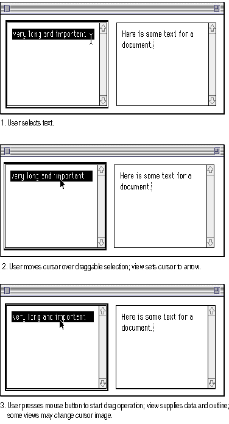
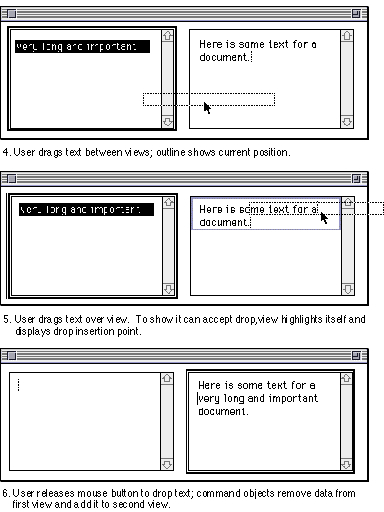

Performing a Drag Operation
This section describes how the objects in the MacApp application DemoDialogs work together with the Macintosh Drag Manager to perform a drag operation. The discussion refers to the steps of a drag operation--those steps are shown in Figure 9-2 and Figure 9-3.Setting the Drag Cursor
When a user moves the cursor over a view, MacApp calls the view'sDoSetDragCursormethod. TheDoSetDragCursormethod calls two other view methods to determine whether a mouse click would initiate a drag:DoMakeDragCursorRegionandWillDrag.The
TView::DoMakeDragCursorRegionmethod creates a region to describe the specific portion of the view's content that is draggable. Draggable content is often the area within the view that the user perceives as selected, such as highlighted cells in a grid view or selected text in a text view. In theTViewclass,DoMakeDragCursorRegioncallsDoMakeDropHiliteRegion, which creates a region that matches the view's extent. Your application can overrideDoMakeDragCursorRegionorDoMakeDropHiliteRegionto supply a specialized drag cursor region. See MacApp'sTEditTextclass for an example of overridingDoMakeDropHiliteRegion.The
TView::WillDragmethod checks whether thefDraggablefield is set toTRUEand the cursor is currently over the draggable region. TheWillDragmethod of subclasses ofTViewmay check for additional conditions. For example,TTEView::WillDragreturnsTRUEonly ifTView::WillDragreturnsTRUEand the Shift key is not pressed. Dragging while the Shift key is pressed is used to select additional text rather than to initiate a drag operation.If
WillDragreturnsTRUE, theDoSetDragCursormethod calls theGetWillDragCursorIDmethod. InTView,GetWillDragCursorIDreturns the resource ID for an open-hand image--an image appropriate for dragging data such as a picture. In both theTTEViewandTEditTextview classes,GetWillDragCursorIDreturns thekNoResourceID constant. This results in the display of an arrow cursor--an image appropriate for dragging text.You can override
GetWillDragCursorIDto supply a special cursor ID resource for your view. The cursor you display should alert the user to the possibility of initiating a drag operation. Step 2 in Figure 9-2 shows an arrow cursor image over draggable text.Performing a Drag
When a user clicks the mouse with the cursor image over a view, MacApp calls the view'sHandleMouseDownmethod. To determine whether the click can initiate a drag, theHandleMouseDownmethod calls the same view methodsDoSetDragCursordid:DoMakeDragCursorRegionandWillDrag.Figure 9-2 Dragging and dropping text in the DemoDialogs application (steps 1-3)

Figure 9-3 Dragging and dropping text in the DemoDialogs application (steps 4-6)

If
WillDragreturnsTRUE,HandleMouseDowncalls theGetIsDraggingCursorIDmethod. InTView,GetIsDraggingCursorIDreturns the resource ID for a closed-hand image--an image appropriate for dragging data such as a picture. In both theTTEViewandTEditTextview classes,GetIsDraggingCursorIDreturns thekNoResourceID constant. This results in the display of an arrow cursor--an image appropriate for dragging text.You can override
GetIsDraggingCursorIDto supply a special cursor ID resource for your view. Step 3 in Figure 9-2 shows an arrow cursor image as a user starts an operation to drag text.After setting the cursor based on the supplied cursor ID,
HandleMouseDowncalls the view'sHandleDragmethod to prepare data and initiate a drag operation. TheTView::HandleDragmethod is not intended to be overridden and is consequently not declared as virtual.The
- Note
- To provide flexibility,
HandleMouseDowncalls theDoGetDragProxymethod, then calls theHandleDragmethod of the returned object. For theTViewclass,DoGetDragProxyreturns a reference to the view itself, but you can overrideDoGetDragProxyand provide a different object to handle the drag operation.- For example, the
TDialogTEViewclass overridesDoGetDragProxyand returns a reference to its associatedTEditTextobject, which then handles the drag.TView::HandleDragmethod first calls the global drag session object'sClearDragmethod to dispose of any previous drag operation. It then calls two view methods,DoAddDragContentandDoMakeDragOutlineRegion. These methods are described in the following sections.Supplying Drag Data
TheTView::DoAddDragContentmethod creates drag items to represent the data being dragged and installs the drag items into the drag session. TheDoAddDragContentmethod calls the drag session object'sAddDragItemmethod once for each item it adds to the drag.AddDragItemreturns a pointer to a newTDragItemobject.DoAddDragContentthen callsTDragItem->AddFlavoronce for each flavor it can supply for that data type. For example, a view might callAddFlavorfor PICT, GIF, JPEG, QuickTime, and other flavors. Instead ofAddFlavor, it may callTDragItem->PromiseFlavorto promise data that will only be delivered if requested. For information on the advantages of promising data, see "Promising Data" on page 267.Supplying a Drag Outline Region
TheTView::DoMakeDragOutlineRegionmethod creates and returns an outline region that represents the item or items to be dragged. TheTViewclass implementation ofDoMakeDragOutlineRegioncalls the view'sDoMakeDragCursorRegionmethod, which calls theDoMakeDropHiliteRegionmethod. InTView,DoMakeDropHiliteRegionprovides the view's visible extent as a default region. If this doesn't work for your view, you can override any of these methods (DoMakeDragOutlineRegion,DoMakeDragCursorRegion, orDoMakeDropHiliteRegion).Step 4 in Figure 9-3 shows the outline region for a dragged text selection.
Starting the Drag Session
Once the view'sHandleDragmethod has supplied data and an outline for the drag session, it calls the global drag session object'sStartDragmethod to initiate the drag session. TheStartDragmethod calls the Drag Manager routineTrackDragto initiate the drag session and calls its ownClearDragmethod to dispose of the session once it is completed.